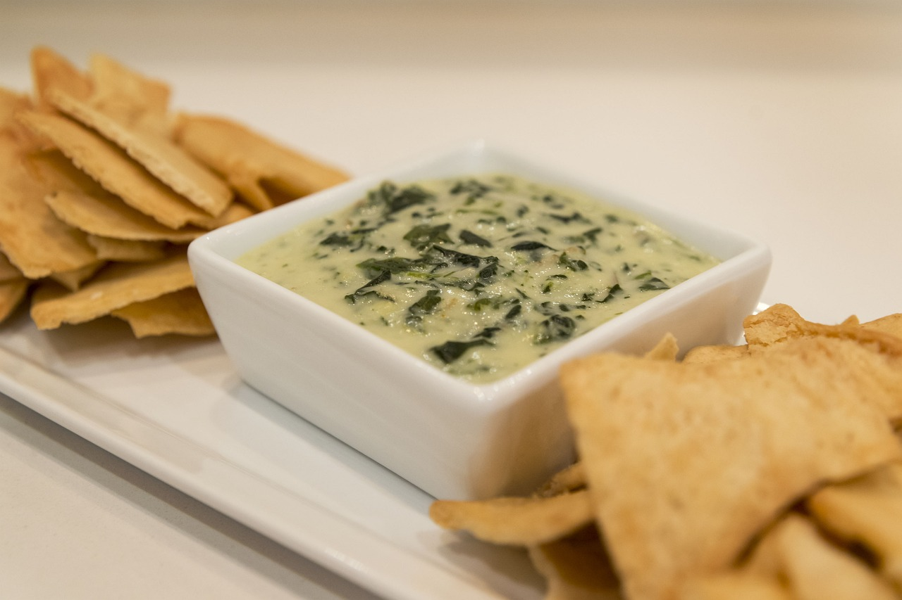
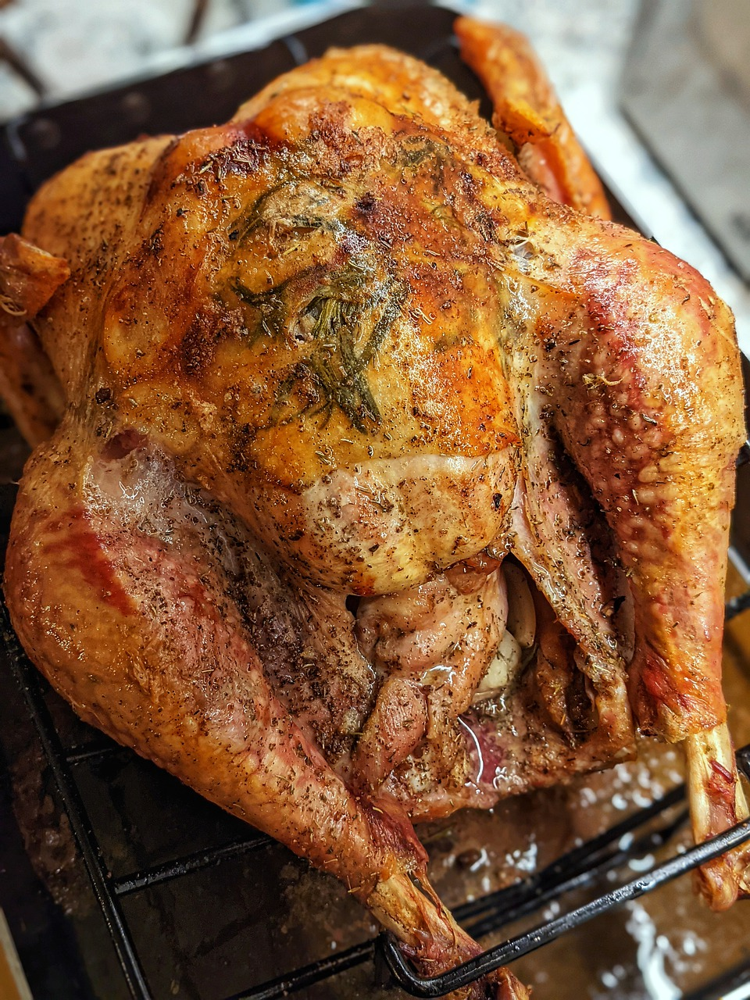
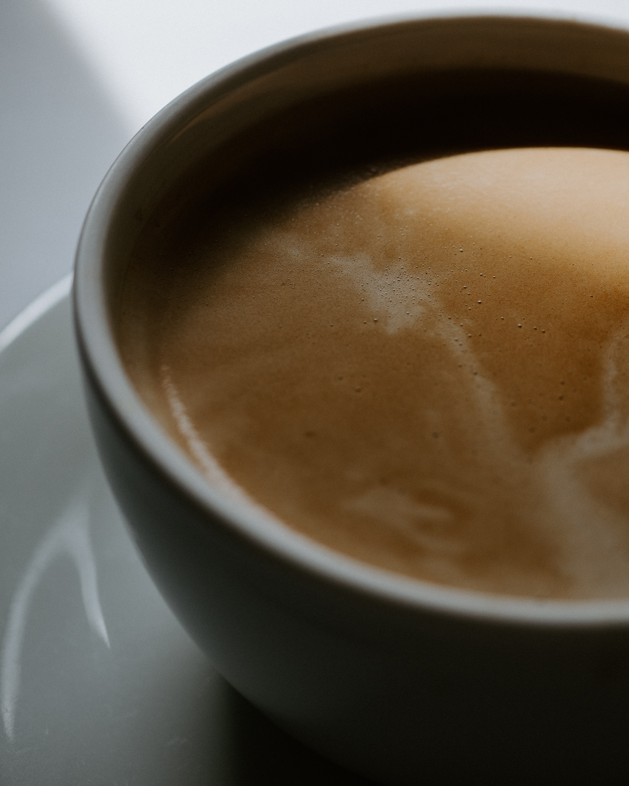

Spinach and Artichoke Dip
Servings | 8 Calories | 242
Prep 10 Minutes Cook 20 Minutes Total 30 Minutes
- 8 oz. cream cheese, well softened
- 1/4 cup sour cream
- 1/4 cup mayonnaise
- 1 garlic clove, minced (1 tsp)
- 2/3 cup (76g) finely shredded parmesan cheese
- 1/2 cup (56g) finely shredded mozzarella cheese
- Pepper, to taste
- 1 (14 oz) can quartered artichoke hearts, can liquid drained, squeeze artichokes to drain excess liquid, chopped
- 6 oz. frozen spinach, thawed, squeezed to drain excess liquid
- Preheat oven to 350 degrees. Spray a small (1 quart) baking dish with non-stick cooking spray.
- In a mixing bowl stir together cream cheese, sour cream, mayonnaise, garlic, parmesan, mozzarella and pepper.
- Stir in artichokes and spinach.
- Spread mixture evenly into prepared baking dish. Bake in preheated oven until heated through and melty, about 20 minutes.
- Serve warm with tortilla chips, crackers or toasted baguette slices
Content for New article Tag Goes Here

Easy Oven Roasted Turkey
Servings | 16 Calories | 576
Prep 20 Minutes Cook 3 Hours 30 Minutes Total 3 Hours 50 Minutes
- 1 12-20 pound turkey
- 1 onion , peeled and quartered
- 1 lemon , quartered
- 1 apple (any kind), quartered
- .75 ounce container fresh rosemary
- .75 ounce container fresh thyme
- .75 ounce container fresh sage
- If the turkey is frozen: Thaw in the fridge, 24 hours for every 5 pounds of Turkey. I like to give myself 1 extra day, just to be safe.
- Remove the thawed turkey from the fridge 1 hour before roasting, to let it come to room temperature.
- Adjust your oven rack so the turkey will sit in the center of the oven. Preheat oven to 325 degrees F.
- Make the herb butter by combining room temperature butter, minced garlic, salt, pepper, one tablespoon fresh chopped rosemary, one tablespoon fresh chopped thyme, and half a tablespoon of fresh chopped sage. (You’ll use the remaining fresh herbs for stuffing inside the cavity of the turkey).
- Remove turkey from packaging and remove the neck and giblets from the inside the cavities of the bird. (Reserve them for gravy, if you want, or discard them). Pat the turkey very dry with paper towels.
- Season the cavity of the turkey with salt and pepper. Stuff it with the quartered lemon, onion and apple and leftover herbs.
- Use your fingers to loosen and lift the skin above the breasts (on the top of the turkey) and smooth a few tablespoons of the herb butter underneath.
- Tuck the wings of the turkey underneath the turkey and set the turkey on a roasting rack inside a roasting pan.
- Microwave the remaining herb butter mixture for 30 seconds (it doesn’t need to be completely melted--just really softened). Use a basting brush to brush the remaining herb butter all over the outside of the turkey, legs and wings.
- Roast at 325 degrees F for about 13-15 minutes per pound, or until internal temperature (inserted on middle of thigh and breast) reaches about 165 degrees.
- Remove the turkey from the oven once it reaches 160 degrees. Then, tent it with foil, and let it rest on the counter. It will continue cooking under the foil, to reach 165 degrees F.
- ***Check the turkey about halfway through cooking, and once the skin gets golden brown, cover the top of the turkey with tinfoil, to protect the breast meat from overcooking. Alternately, you could start cooking the turkey with it tented in foil, then during the last hour or so of cooking you can take the foil off to let the turkey brown.
- Allow turkey to rest for 20-30 minutes before carving.
- Reserve any drippings and juice remaining in your roasting pan to make turkey gravy
Content for New article Tag Goes Here

Cream Cheese Mashed Potatoes
Servings | 10 Calories | 338
Prep 10 Minutes Cook 20 Minutes Total 30 Minutes
- 5 Pounds Russet Potatoes
- 8 Ounces Herb and Garlic Cream Cheese
- 1 Stick Butter
- ½ - 1 Cup Milk
- 1 Teaspoon Salt
- 1 Teaspoon Garlic Powder
- ½ Teaspoon Pepper
- Chives for serving, Optional
- Wash and peel potatoes, then cut into 1 inch cubes. Place the potatoes into a large stockpot and cover with cold water. Bring the potatoes to a gentle boil and cook for 15-20 minutes until tender. Drain the potatoes and return to the warm pot, or to a mixing bowl.
- Add the cream cheese, butter, milk, and seasonings to the potatoes. Mash slightly to break the large potatoes up. Beat the potatoes with an electric mixer on medium speed until smooth and fluffy.
- Serve immediately garnished with chives if desired.
Content for New article Tag Goes Here

Turkey Gravy
Servings | 8 Calories | 40
Prep 5 Minutes Cook 5 Minutes Total 10 Minutes
- 1/4 cup turkey drippings (fat and juices from roasted turkey)
- 1/4 cup Gold Medal™ all-purpose flour
- 2 cups liquid (juices from roasted turkey, broth, water)
- 1/2 teaspoon salt, or less, if using turkey drippings
- 1/2 teaspoon pepper
- Pour drippings from roasting pan into bowl, leaving brown particles in pan. Return 1/4 cup drippings to roasting pan. (Measure accurately because too little fat makes gravy lumpy.) Stir in flour. (Measure accurately so gravy is not greasy).
- Cook over medium heat, stirring constantly, until mixture is smooth and bubbly. Stir in liquid. Heat to boiling, stirring constantly. Boil and stir 1 minute. Stir in salt and pepper.
Content for New article Tag Goes Here

Delicious Pumpkin Pie
Serving | 8 Calories | 379
Prep 10 Minutes Cook 50 Minutes Total 1 Hour
- 1 (15 ounce) can pumpkin puree
- 1 (14 ounce) can Eagle Brand Sweetened Condensed Milk
- 2 large eggs
- 1 teaspoon ground cinnamon
- ½ teaspoon ground ginger
- ½ teaspoon ground nutmeg
- ½ teaspoon salt
- 1 (9 inch) unbaked pie crust
- Preheat the oven to 425 degrees F (220 degrees C).
- Whisk pumpkin puree, condensed milk, eggs, cinnamon, ginger, nutmeg, and salt together in a medium bowl until smooth.
- Pour into crust.
- Bake in the preheated oven for 15 minutes.
- Reduce oven temperature to 350 degrees F (175 degrees C) and continue baking until a knife inserted 1 inch from the crust comes out clean, 35 to 40 minutes.
- Let cool before serving.
Content for New article Tag Goes Here
Content for New main Tag Goes Here